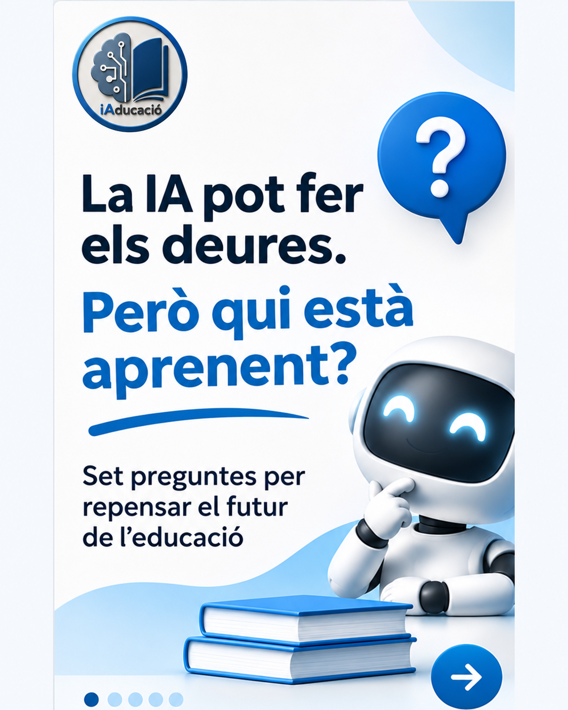

Notícies i novetats · iAducació ·
La IA pot fer els deures. Però qui està aprenent?
Un bon treball no sempre mostra què ha après l’alumnat. Una entrevista a Miquel Àngel Prats convida a repensar l’avaluació, la formació docent i les decisions educatives davant la IA.

En l’entrevista La intel·ligència artificial i el futur de l’educació: set preguntes per repensar el model educatiu, publicada a intel·ligència artificial.cat, Miquel Àngel Prats, professor de tecnologia educativa a Blanquerna, reflexiona sobre l’aprenentatge, l’equitat i el paper de les persones en un context de IA generativa.
Què ens ajuda a repensar?
1. El resultat no explica tot el procés
Prats assenyala que una producció elaborada amb ajuda de la IA pot semblar molt bona sense reflectir necessàriament el que l’alumne comprèn. Comprendre, relacionar idees, dubtar i construir criteri requereixen temps i participació activa.
2. Avaluar també és observar com es pensa
Proposa combinar produccions amb converses, defenses orals, revisions i situacions en què l’alumnat expliqui i justifiqui les seves decisions. També defensa que hi hagi moments per pensar i resoldre problemes sense assistència tecnològica, segons l’objectiu d’aprenentatge.
3. Formació docent amb criteri pedagògic
La formació sobre IA ha d’incloure el funcionament i les limitacions de les eines, però també les seves implicacions educatives i ètiques. Prats planteja partir de situacions d’aula i de preguntes sobre què volem aprendre i quan la tecnologia aporta valor.
4. Ni una resposta única ni una adopció automàtica
L’entrevista qüestiona l’alternativa entre prohibir i incorporar la IA indiscriminadament. Defensa decisions compartides i contextualitzades que tinguin en compte la finalitat, l’edat, els límits i la supervisió humana.
5. Equitat, autonomia i relació educativa
L’accés a una eina no garanteix per si sol un ús crític. L’acompanyament, els coneixements previs i les condicions dels centres també influeixen en les oportunitats. Per a Prats, la responsabilitat pedagògica i la relació humana continuen sent essencials.
Una pregunta per al claustre
En quins moments una eina d’IA ajuda l’alumnat a pensar i en quins podria substituir una pràctica que necessita fer per aprendre?
Aquesta pregunta és una proposta de reflexió d’iAducació a partir de l’entrevista.
Per aprofundir en les orientacions i els recursos disponibles per als centres, consulta també Intel·ligència artificial en educació, del Departament d’Educació.
Llegir l’entrevista completa ↗
Font
Entrevista a Miquel Àngel Prats, La intel·ligència artificial i el futur de l’educació: set preguntes per repensar el model educatiu, intel·ligència artificial.cat. Consulta: 8 de novembre de 2026.